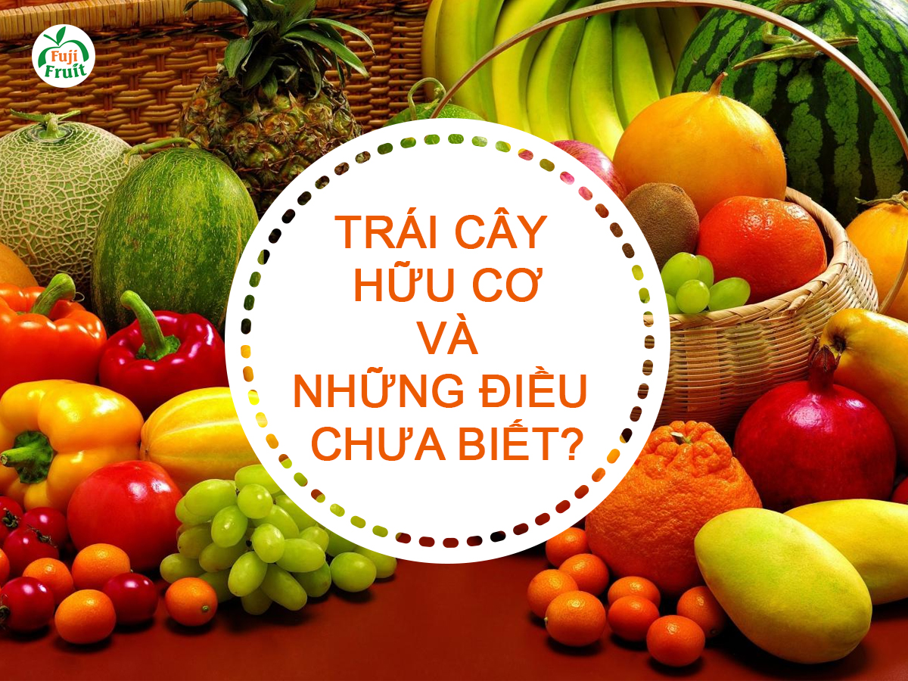

TRÁI CÂY HỮU CƠ
Hiện nay, các loại trái hữu cơ cũng như thực phẩm hữu cơ đang ngày một phổ biến và được sử dụng rộng rãi hơn. Đây là các sản phẩm nói không với chất hóa học, từ khâu trồng trọt đến khâu thành phẩm và bảo quản,….được người tiêu dùng ưa chuộng những năm gần đây. Vậy trái cây hữu cơ thực chất là gì? Và có thực sự tốt? Trong bài viết này, hãy cùng tìm hiểu rõ hơn về trái cây hữu cơ nhé!
Trái cây hữu cơ là gì?
Ở Việt Nam, khái niệm về trái cây hữu cơ hay thực phẩm hữu cơ có vẻ nhưng vẫn chưa thực sự phổ biến nhiều, song hầu hết mọi người cũng hiểu rõ được những lợi ích, ý nghĩa và tầm quan trọng của nó đối với sức khỏe con người như thế nào. Trái cây hữu cơ là khái niệm để chỉ những loại hoa quả không sử dụng:
Hóa chất nhân tạo (thuốc trừ sâu, phân bón hóa học, chất bảo quản…)
Hormone kích thích tăng trưởng
Kháng sinh hoặc sinh vật biến đổi gen
Sản xuất trái cây hữu cơ đòi hỏi thực hiện trong một hệ sinh thái đảm bảo, không được gần các nhà máy công nghiệp, không gần quốc lộ, tại vùng đất nền và nguồn nước có dư lượng kim loại và các chất độc tự nhiên thấp. Nguồn nước tưới phải là nước giếng sạch, không phải nước sông.
Đồng thời, nhờ vào quá trình trồng tự nhiên nên mùi, hương thơm và thành phần dinh dưỡng trong trái cây hữu cơ vẫn được duy trì với tỷ lệ cao. Theo các chuyên gia, trái cây organic có hàm lượng dinh dưỡng cao hơn 15% so với trái cây thông thường. Một số nghiên cứu khoa học cũng chỉ ra rằng hoa quả cơ chứa chất chống oxy hoá nhiều hơn 40% so với các sản phẩm không hữu cơ. Do vậy, các loại hoa quả này có hiệu quả trong việc giảm nguy cơ bệnh tim, ung thư, đường huyết cao.Tuy nhiên, do không chứa chất bảo quản nên loại hoa quả này không để được quá lâu và cần tiêu thụ càng nhanh càng tốt.
Theo quy định, các sản phẩm đạt tiêu chuẩn Organic sẽ được gắn nhãn “Certified Organic Foods” Chứng nhận này được gắn trên sản phẩm khi và chỉ khi loại trái cây đó: không chứa hormone, không chứa thuốc trừ cỏ, không chứa phân bón hóa học, không bị biến đổi gen, không bị chiếu xạ tiệt trùng, không chất bảo quản. Tất cả các loại trái cây hữu cơ đều chịu sự kiểm soát liên tục, gắt gao từ khâu đầu đến khâu cuối cùng. Và những trái cây được gắn mác hữu cơ Organic phải được kiểm soát và kiểm nghiệm bởi các tổ chức có thẩm quyền và uy tín về lĩnh vực này.
Phân biệt trái cây hữu cơ và trái cây sạch
Có rất nhiều người nghĩ rằng trái cây hữu cơ chính là trái cây sạch. Tuy nhiên đây là một quan niệm sai lầm, trái cây hữu cơ đúng là trái cây sạch những chưa đủ, còn trái cây sạch chưa hẳn đã là trái cây hữu cơ. Theo các chuyên gia, trái cây sạch là các loại trái cây thu được từ chăm bón, nuôi trồng những vẫn sử dụng các “đầu vào” là hóa chất như thuốc trừ sâu, chất hóa học tổng hợp… Song, việc sử dụng hóa chất được thực hiện đúng quy trình để sản phẩm ra thị trường chỉ còn dư lượng độc hại dưới mức cho phép, không gây hại cho sức khỏe người tiêu dùng. Cũng vì thế chúng được gọi là sản phẩm “an toàn”. Còn như đã tìm hiểu khái niệm ở trên, bạn cũng biết, trái cây hữu cơ là các loại trái Cây phải thu từ nguồn sản xuất không sử dụng bất kỳ hóa chất nào, nói không với các loại hóa chất. Đó chính là điểm khác biệt của trái cây hữu cơ và trái cây sạch.
Tại sao nên chọn trái cây hữu cơ?
Độ tươi ngon của trái cây: So với trái cây thông thường, hàm lượng dinh dưỡng vitamin và khoáng chất trong các loại trái cây hữu cơ cũng cao hơn 15 %. Trái cây hữu cơ cũng được tươi ngon hơn vì sản phẩm chỉ có thể bán trong thời gian ngắn, không để lâu vì không chứa chất bảo quản nên trái cây sẽ nhanh chóng hư hơn.
An toàn cho sức khỏe của trẻ: Khi sử dụng trái cây hữu cơ, bạn sẽ hạn chế được những rủi ro trẻ bị ngộ độc trái cây hoặc dung nạp một số chất độc từ thuốc trừ sâu gây ảnh hưởng đến quá trình phát triển sau này. Đặc biệt, đối với trẻ sơ sinh là đối tượng rất nhạy cảm, vì vậy để cho trẻ có thể phát triển một cách an toàn và lành mạnh nhất thì bạn nên lựa chọn trái cây hữu cơ cho trẻ.
Tăng cường hệ miễn dịch: Nếu như trái cây bình thường bị tiêm vào các chất biến đổi gen thì trái cây hữu cơ lại nói không với điều đó. Theo một nghiên cứu tổng hợp từ 343 nghiên cứu về sự khác nhau giữa sản phẩm thông thường và sản phẩm hữu cơ đã chỉ ra rõ chất chống oxy hóa trong các sản phẩm hữu cơ nhiều hơn từ 1- 2 lần sản phẩm thông thường.
Những lợi ích của việc sử dụng các loại trái cây hữu cơ
Chống oxy hóa rất tốt: Theo nghiên cứu, trái cây hữu cơ chứa nồng độ chất chống oxy hóa cao hơn đáng kể so với các rau được trồng thông thường. Trên thực tế, các hợp chất chống oxy hóa có liên quan đến việc giảm nguy cơ mắc các bệnh mãn tính, bao gồm các bệnh thoái hóa tim mạch và thần kinh cũng như một số bệnh ung thư.
Không có thuốc trừ sâu: Đây là lý do tại sao mọi người chọn tiêu thụ trái cây hữu cơ, bởi các sản phẩm có chưa thuốc trừ sâu sẽ gây ra một số rối loạn y tế và được coi là không tối đối với sức khỏe.
Tăng cường hệ thống miễn dịch: Như đã đề cập ở phía bên trên, trái cây hữu cơ có tác dụng tăng cường hệ thống miễn dịch rất tốt. Bình thường khi chúng ta tiêu thụ một lượng trái cây có chứa đầy thuốc trừ sâu, chúng sẽ khiến cơ thể gặp nguy hiểm. Thường xuyên ăn các loại trái cây như vậy sẽ làm cho hệ thống miễn dịch suy yếu dẫn đến tăng tỷ lệ tử vong khi sinh, rối loạn chức năng tình dục, một số loại ung thư và tăng độ nhạy cảm với các chất gây dị ứng.
Kháng sinh: Trái cây thông thường được cho là có lượng lớn kháng sinh trong đó. Điều này một lần nữa làm suy yếu hệ thống miễn dịch và khiến bạn có nguy cơ mắc bệnh cao hơn. Vì vậy sử dụng trái cây hữu cơ là một điều khá hợp lý.
Tốt cho sức khỏe: Vì thực phẩm hữu cơ không có phân bón hóa học, nó không ảnh hưởng đến cơ thể theo cách tiêu cực.
Cải thiện hương vị: Hương vị của thực phẩm hữu cơ vượt trội hơn nhiều, vì nó không có chất bảo quản. Trái cây hữu cơ được sản xuất trong các trang trại nhỏ hơn, được bán tươi trong thời gian ngắn, vì vậy sẽ khi đến tay người tiêu dùng, nó vẫn giữ được hương vị trọn vẹn nhất.
Tốt hơn cho môi trường: Nông nghiệp hữu cơ làm giảm ô nhiễm môi trường, bảo tồn nước, giảm xói mòn, tăng độ phì nhiêu của đất và sử dụng ít năng lượng hơn. Điều này làm cho nó lành mạnh đối với môi trường.
Bảo vệ sức khỏe trẻ nhỏ: Một trong những lợi ích quan trọng nhất của trái cây hữu cơ là tốt cho sức khỏe của trẻ sơ sinh. Phụ nữ mang thai khi tiêu thụ trái cây hữu cơ nuôi dưỡng thai nhi một cách tự nhiên.
Không biến đổi gen: Trái cây hữu cơ không bị biến đổi gen. Nhiều loại trái cây không hữu cơ đang ngày càng biến đổi gen và hậu quả sức khỏe có thể thực sự nghiêm trọng.
Trái cây hữu cơ có đắt hơn trái cây thông thường không?
Câu trả lời tất nhiên là có. Những lý do dưới đây sẽ giúp bạn hiểu được vì sao trái cây hữu cơ lại đắt hơn các loại trái cây thông thường:
Nguồn cung cấp trái cây hữu cơ có số lượng giới hạn hơn so với nhu cầu sử dụng
Chi phí sản xuất trái cây hữu cơ thường cao hơn do yêu cầu đầu vào lao động trên một đơn vị sản lượng cao hơn và vì ít sự đa dạng của các doanh nghiệp cạnh tranh khiến cho giá thành của trái cây hữu cơ cao hơn
Sản lượng trái cây hữu cơ sau khi xử lý thu hoạch ít với chi phí lại cao hơn, do bắt buộc phải tách biệt giữa thành phẩm hữu cơ và thành phẩm thông thường, đặc biệt là trong quá trình chế biến và vận chuyển.
Tuy nhiên, hiện nay, nhu cầu về trái cây hữu cơ nói riêng và các mặt hàng thực phẩm hữu cơ nói chung tăng cao, cộng với cải tiến trong công nghệ, tất cả những chi phí này đã được giảm thiểu rõ rệt, giúp cho giá thành của sản phẩm hữu giảm xuống và phù hợp hơn, nên bạn không quá ngại về vấn đề giá thành nữa.
MỘT SỐ THÔNG TIN VỀ CÁC LOẠI HOA QUẢ
Đu đủ:
Không chỉ là một thực phẩm dinh dưỡng giàu vitamin, đu đủ còn là một thực phẩm đóng góp vào việc cải thiện tình trạng hoạt động của nhiều chức năng trong cơ thể, nhất là trong lĩnh vực tim mạch và ung thư. Ăn đu đủ thường xuyên có tác dụng bổ máu, giúp hồi phục gan ở người bị sốt rét, tăng sức đề kháng cho cơ thể.
Dưa hấu:
Giúp cải thiện trí nhớ tốt nhất, cung cấp vitamin C cho cơ thể, dùng giải khát chống nhiệt, chống ôxy hoá có tác dụng chống lại các bệnh tim mạch và ung thư tuyến tiền liệt... giúp kiểm soát huyết áp của cơ thể...
Táo:
Các nhà khoa học Mỹ cho biết, ăn táo hoặc uống nước táo ép thường xuyên sẽ ngăn ngừa được sự phá huỷ các tế bào não, tăng cường khả năng ghi nhớ, bảo vệ các tế bào não tránh khỏi sự phá huỷ...
Dứa:
Nên ăn sống hoặc ép lấy nước uống. Dứa giúp thư giãn thần kinh và bảo vệ các mạch không bị nghẽn. Người huyết áp cao có thể dùng dứa dưới dạng nước ép vì Bromelin trong dứa có tác dụng làm giảm độ nhớt của máu, làm tan huyết khối và làm giảm tắc mạch cục bộ.
Chuối:

Chuối chứa nhiều sinh tố như A, B1, B2, B6, B12, C, D, E và các khoáng tố. Chuối rất thích hợp cho người bệnh tim mạch, cao huyết áp... Ngay khi mỏi mệt, gặp lúc đường huyết hạ thấp, chỉ cần trái chuối là xong. Chuối vừa gây hiệu quả an thần nhẹ nhàng dựa trên cơ chế thư giãn, vừa thúc đẩy chức năng tư duy theo chiều hướng lạc quan yêu đời. Các thầy thuốc khuyên người dân mỗi ngày ăn hai quả chuối giúp cải thiện đáng kể thể chất của từng người.
Lê:
Được đánh giá là có tác dụng tốt cho não như chuối và táo. Lê còn dùng để chữa một số bệnh như ho, chữa bỏng, giải độc rượu, chữa nôn nấc, khó nuốt. Ăn lê tốt cho những ai đang điều trị bệnh tăng cholesterol huyết...
Nho: Chất đường nho có khả năng cung cấp nguồn năng lượng hoạt động cho não bộ một cách nhanh chóng. Nho còn cung cấp carbohydrate, chất sắt, vitamin B, canxi và magiê. Đây là những chất dinh dưỡng quan trọng giúp não duy trì sinh lực.
Bạn nên biết:
Không nên ăn đu đủ quá nhiều có thể dẫn đến vàng da.
Ăn kiêng bằng dưa hấu giúp giảm cân và đào thải được các chất độc ra khỏi cơ thể.
Các nhà khoa học khuyên mọi người hàng ngày nên uống 2-3 chén nước táo ép hoặc ăn 2-4 quả táo sẽ có được kết quả như mong muốn.
Khi ăn dứa nên chấm muối sẽ làm giảm sự kích thích với niêm mạc miệng và lưỡi, đồng thời dứa cũng thơm, ngọt hơn.
Chuối sẽ mất hết tác dụng nếu trữ trong tủ lạnh hay ngăn đá.
Lê ăn nhiều sẽ hại tỳ vị, do đó không nên dùng cho người bị tỳ vị hư hoặc bị viêm ruột.
Nước ép nho đỏ có tác dụng xấu với người đang dùng thuốc trị tăng huyết áp thuộc nhóm đối kháng canxi.
Hi vọng với những chia sẻ vừa rồi, sẽ giúp bạn có cái nhìn chính xác hơn về các sản phẩm trái cây hữu cơ cũng như biết được thêm về lợi ích của nó. Hãy luôn là người tiêu dùng thông thái nhé!